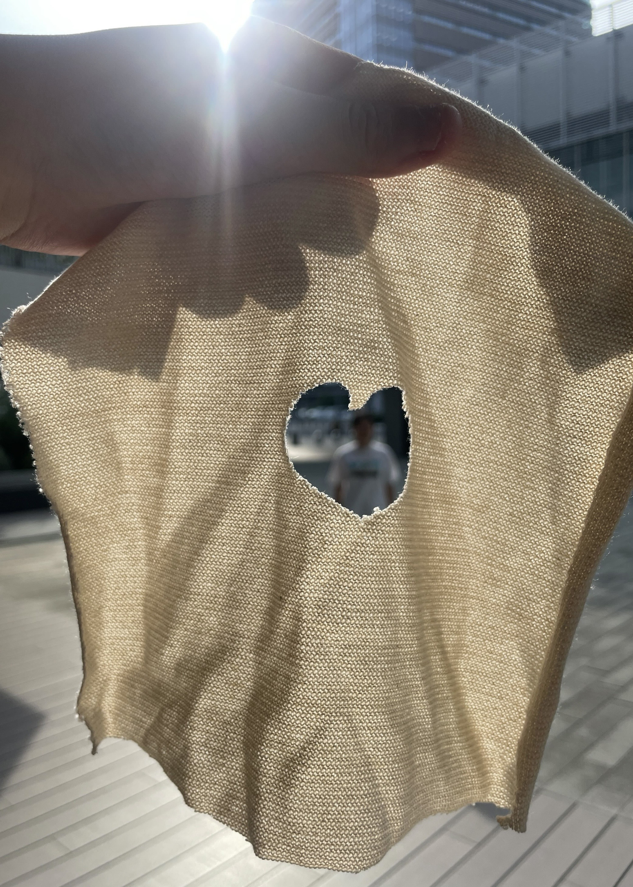

２０２５年７月４日
やったこと
- 制作物に対する考えをまとめ、方向性を定める
- サンシェード(縮小版)作成
- 薔薇に使用するＣの布を染色
- ケープにツタとカモメの刺繍
- スマホショルダーのバッグ部分を素材変更して取り付け
- 最終発表のスライド作成
制作物に対する考えをまとめ、方向性を定める
中間発表のフィードバックを参考に、今後の方向性についてグループで話し合った。
実験結果をもとに、紙布の効果を示す。
※GREEN×EXPOの公式キャラクター「トゥンクトゥンク」は使用禁止。
【これまでの講義を振り返って・・・】
プロトタイピングの本質について改めて理解する時間になった。
サービスや製品を作る際、「シーン(状況)・プロップス(道具)・ロール(役割)」を一体として考える必要がある。
誰が、どのような場面で、どのように使い、どのような価値を生み出すかをプリテンド(フリ)をすることで、より有効なプロトタイピングが可能となる。
今はフェイクとリアルの間にあるため、まずは早い段階で形にし、「シーン・プロップス・ロール」のどの段階にあるかを把握して、プロトタイピングを進めていくことが重要。
このことから、ターゲットをGREEN×EXPOのスタッフに限定し、スタッフとして活動している際に必要な暑熱対策に絞った。
【ケープ】
スタッフ用に作成。
会場にミストがあればより暑熱対策になるのでは？！(ミストゲート設置)
紙布で制作した花を取り付けるなど、着用したくなるデザインにしたい。
首周りを着やすくし、見た目も良くするといった改善をする。
一般用も色違いで作る？！季節の花の色や、自然の着色料など。普段使いも可能にしたい。
【ポシェット】
スマホショルダーのサイズを変更。
スマホだけでなく、長財布なども収納できるサイズにする。
収納部分の生地は硬くして強度を高める(Fの布)。
サイズのイメージは結婚式に持って行くバッグ(スマホを取り出しやすく縦長にする？！)
首元を霧吹きで濡らし、暑熱対策にもなるように工夫する。
さらに、若者が来てもらうにはどのような方法があるか考えた。映え・推し活、どんなものがあれば園芸博に来たくなるか。
【映えスポット(サンシェード)】
日差しから身を守る。
日陰をつくることが目的。イメージはテントやタープ。
内側を無地。外側に柄を付ける。背景に花を映すように、内側から写真を撮れるようにする。
ハートの切り抜きをする。(陰で押しと写真撮影・切り抜きを窓にして、人と園芸を同時に撮影)。
防水対策(ニスなど)が必要になる。
形のあるモノではなく、シーンに焦点を当てる。映えスポットで若者の興味を惹くことで、GREEN×EXPOの拡散に繋がる。
ハッシュタグを作成(投稿に、紙布の製品が映ることで、サーキュラーの認知にも繋がる)。
サンシェード(縮小版)作成
Ｄの布を四角形に切り取り、中央をハート型で切り抜いた。
【製作に至った理由】
若者の園芸博への注目を集めるため、映えスポットを置くのはどうかと考えた。
推し活が流行っているため、ぬいぐるみやアクリルスタンド、アクリルキーホルダーを置き、
ハート型に切り抜かれた窓から見える園芸と一緒に写真を撮ることを想定した。
【問題点】
布をテントの様に張って、涼める場所を確保できるのか。
休憩場所に写真を撮りたい人が集まったら、休憩ができなくなるのではないか。
雨の日はどうするか。

薔薇に使用するＣの布を染色
樹脂用染料(アクリル板の染色液)を使用。
本来は70℃でやるところ、今回は65℃ぐらいから始めた。
今回は薔薇の形にする前に染めることで、グラデーションにも挑戦した。
黄色が少し、薄いと感じた。
全体的にしっかり染色しないと色が薄い。
Dの布よりはCの布の方がきれいに染まるように感じた。
ケープにツタとカモメの刺繍
ツタ：横浜市の花である薔薇をボタン変わりに装着するため、その周辺にツタを刺繍した。
カモメ：横浜市の鳥であるカモメをデザインに採用した。
スマホショルダーのバッグ部分を素材変更して取り付け
Dの布からFの布に変更し、強度を高めた。
サイズも変更し、容量を増やしたことで、スマホショルダーからポシェットに名称も変更した。
硬い素材に変更になったことで、ボタンを手縫いで装着するのがとても難しかった。
最終発表のスライド作成
どんなデザインのスライドにするかグループで意見をすり合わせた。
どんな発表内容にするか考えた。
紙ごみ回収。(ALMOND出した。)